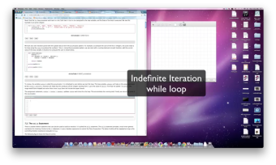

Mais sobre Iteração¶
Realizar tarefas repetitivas sem cometer erros é algo que os computadores fazem bem e as pessoas nem tanto. É por isso que os computadores são utilizados muitas vezes para automatizar esses tipos de tarefas.
A execução repetida de uma sequência de instruções é chamada de
iteração (iteration). Como iterar é muito comum, Python tem
várias características para torná-la mais fácil. Nós já vimos o
comando for no Capítulo 3. Esta é uma forma muito comum de
iteração em Python. Neste capítulo também vamos ver o comando
while — como uma outra maneira de fazer iterações em seus
programas.
Scratch Editor
Mais sobre o comando for¶
Lembre-se que o comando for processa cada item em uma lista. Cada item, por sua vez, é (re)atribuído a variável de contagem, e o corpo do laço é executado. Vimos este exemplo em um capítulo anterior.
(ch07_for1)
Vimos também que uma iteração pode ser combinada com a idéia de atualização para formar o padrão acumulador. Por exemplo, para calcular a soma dos primeiros n números inteiros, é possível criar um loop usando o comando range para produzir os números de 1 a n. Usando o padrão acumulador, podemos começar com um total parcial e, a cada iteração, adicionar o valor atual à variável de controle. Uma função para calcular esta soma é mostrado abaixo.
(ch07_summation)
Para rever, a variável soma é chamado de acumulador. Ela é
inicializada com zero antes de iniciar o laço. A variável do laço,
numero irá assumir os valores retornados pela chamada de função
range(1, limite+1). Note que esta chamada produz uma lista com
todos os inteiros a partir de 1 até o valor de limite+1. Se não
tivéssemos adicionado 1 em limite a função range teria devolvido
uma lista sem o valor limite pois essa função não inclui o limite
superior.
O comando de atribuição, soma = soma + numero, atualiza o valor de
soma a cada iteração do laço. A variável soma recebe portanto
o total parcial até um determinado instante da execução. Finalmente, a
função someAte retorna o valor do acumulador.
Scratch Editor
O comando while¶

Há um outro comando Python que pode ser usado para construir uma
iteração. Ele é o comando while. O while fornece um mecanismo
muito mais geral para a iteração. Semelhante ao comando if, ele
usa uma expressão booleana para controlar o fluxo de execução. O corpo
do while será repetido enquanto a expressão booleana de controle
for avaliada como True.
A figura a seguir mostra o fluxo de controle.

Podemos usar o while para criar qualquer tipo de iteração,
incluindo tudo o que já fizemos com um comando for. Por exemplo, o
programa na seção anterior poderia ser reescrito usando o while.
Ao invés de utilizar a função range para produzir os números para
calcular a somatória, vamos precisar programar uma forma de
produzi-los. Para isso, vamos criar uma variável chamada numero e
inicializá-la com 1, o primeiro número da somatória. Cada iteração irá
adicionar numero ao total parcial até que todos os valores tenham
sido usados. Para controlar a iteração, temos de criar uma expressão
booleana que deve ser avaliada como True enquanto desejarmos
acrescentar valores ao total. Neste caso, a somatória deve continuar
enquanto o numero for menor ou igual ao limite.
A seguir ilustramos uma nova versão do programa que calcula a somatória utilizando o comando while.
(ch07_while1)
Você quase pode ler o while como se fosse em linguagem natural
como se fosse a palavara enquanto. Isso significa que, enquanto
numero for menor ou igual a limite, continue a executar o
corpo do laço. Dentro do corpo, atualize soma usando o padrão
acumulador e incremente numero para produzir o próximo elemento da
somatória. Ao final da execução do corpo do laço, vamos voltar a
testar a condição do while. Quando numero tornar-se maior que
limite, a condição falha e o próximo comando a ser executado de
acordo com o fluxo de execução do while é o comando return.
O mesmo programa no codelens lhe permitirá observar esse fluxo de execução.
(ch07_while2)
Note
Os nomes das variáveis foram escolhidos para facilitar a leitura do código.
Formalmente, este é o fluxo de execução do comando while:
- Avalie a condição, que deve resultar em
FalseouTrue. - Se o resultado for
False, saia do comandowhilee continue o programa executando o próximo comando. - Se o resultado da condição for
True, execute os comandos dentro do corpo dowhilee, ao final, retorne ao passo 1.
O corpo do while é constituído por todas as instruções abaixo do cabeçalho com a mesma tabulação.
Este tipo de fluxo é chamado de laço (loop) porque o terceiro
passo volta para o topo, fechando o laço. Observe que se a
condição é avaliada como False no início do laço, os comandos
dentro do corpo nunca são executados.
O corpo do laço deve alterar o valor de uma ou mais variáveis para que
a condição se torne False e faça o laço terminar. Caso contrário,
o ciclo se repetirá para sempre. Isso é chamado de um laço
infinito. Uma boa piada para os cientistas da computação são as
instruções que acompanham alguns xampus: ensaboe, enxague, repita; que
resulta em um laço infinito.
No exemplo anterior, podemos provar que o laço termina pois nós
sabemos que o valor de limite é finito e que o valor de numero
é incrementado a cada iteração do laço. Portanto, a cada iteração, o
valor de numero fica mais próximo do limite, até
ultrapassá-lo, quando o laço termina. Há outros casos onde não é tão
fácil dizer se o laço termina.
Note
A introdução do comando while nos leva a pensar sobre os tipos
de iteração que já vimos. O comando for sempre itera em
uma sequência de valores, como a lista de nomes para o partido
ou a lista de números criados por range. Com nós sabemos
que ele vai repetir uma vez para cada valor desse conjunto,
dizemos que o for cria um laço do tipo iteração
definida (definite iteration) pois nós sabemos
definitivamente quantas vezes vamos iteragir. Por outro lado,
o while depende de uma condição que precisa ser avaliada
como False para que o laço termine. Uma vez que não
sabemos necessariamente quando isso vai acontecer, ele cria o
que nós chamamos de iteração indefinida (indefinite
iteration).Iteração indefinida significa simplesmente que não
sabemos quantas vezes vamos repetir mas, eventualmente, a
condição de controle da iteração irá falhar e a iteração vai
parar. (A menos que tenhamos um laço infinito, que é,
naturalmente, um problema)
Você deve notar que o while dá mais trabalho para você — o
programador — do que o equivalente for. Ao usar um while
você mesmo é que tem que controlar a variável do laço. Você deve
fornecer um valor inicial, criar a condição de saída e depois
certificar-se de mudar alguma coisa no corpo de modo que o laço
termine.
Então, para que precisamos de dois tipos de laços se o for parece
mais fácil? Este próximo exemplo mostra uma iteração indefinida onde
precisamos do poder extra que nós temos usando o while.
Scratch Editor
Teste seu entendimento
7.2.1: Verdadeiro ou Falso: você pode reescrever qualquer ``for`` na forma de um ``while``.
7.2.2: O seguinte pedaço de código contém um laço infinito. Qual é a melhor explicação para o motivo desse laço não terminar?
n = 10
resposta = 1
while ( n > 0 ):
resposta = resposta + n
n = n + 1
print resposta
Caminhadas Aleatórias de Tartarugas¶
Suponha que nós queremos nos divertir assistindo uma tartaruga passear aleatoriamente pela tela. Ao executar o programa, queremos que a tartaruga e o programa se comportem da seguinte maneira:
- A tartaruga começa no centro da tela.
- Jogue uma moeda. Se der cara, vire 90 graus para a esquerda. Se der coroa, vire 90 graus à direita.
- Dê 50 passos para a frente.
- Se a tartaruga passou para fora da tela então pare. Caso contrário, volte para o passo 2 e repita.
Observe que não podemos prever quantas vezes a tartaruga terá de jogar a moeda antes que ela passe para fora da tela, de modo que não podemos usar um for neste caso. De fato, embora muito pouco provável, este programa pode nunca acabar e, por isso, nós chamamos esta iteração de indefinida.
Assim, com base na descrição do problema acima, podemos descrever um programa tal como:
crie uma janela e uma tartaruga
while a tartaruga estiver na janela:
gere um número aleatório entre 0 e 1
if o número == 0 (cara):
vire à esquerda
else:
vire à direita
mova a tarturuga 50 passos para frente
Agora, provavelmente a única coisa que possa estar um pouco confusa
para você é a parte sobre se ou não a tartaruga ainda está na
tela. Mas esta é a parte boa da programação, nós podemos atrasar a
solução das coisas difíceis e obter algo em nosso programa que
funciona imediatamente. A maneira como vamos fazer isso é delegar o
trabalho de decidir se a tartaruga ainda está na tela ou não para uma
função booleana. Vamos chamar esta função booleana de
estaNaTela. Nós podemos escrever uma versão muito simples dessa
função booleana fazendo-a retornar sempre True, ou fazendo-a
retornar um valor aleatório. O ponto é implementar algo simples para
que possamos nos concentrar nas partes que já sabemos como fazer bem e
fazê-las funcionar. Como fazer a função retornar sempre o valor
True não seria uma boa idéia, vamos escrever a nossa versão para
retornar um valor aleatoriamente. Vamos dizer que há uma chance de 90%
da tartaruga ainda permanecer na janela e 10% que a tartaruga tenha
escapado.
(iter_randwalk1)
Agora, temos um programa funcional que desenha um passeio aleatório da tartaruga que tem 90% de chance de ficar na tela. Estamos em uma boa posição, visto que uma grande parte do nosso programa está funcionando e podemos nos concentrar na próxima parte do trabalho - decidir se a tartaruga está dentro dos limites da tela ou não.
Podemos descobrir a largura e altura da tela usando as funções
window_width e window_height do objeto screen (tela do
computador). No entanto, lembre-se que a tartaruga começa na posição
0,0, no meio do tela. Por isso, não queremos que a tartaruga siga além
da metade da largura da tela, tanto para a direita quanto para a
esquerda. Nós também não queremos que a tartaruga siga para além da
metade da altura tanto para baixo quanto para cima. Uma vez que nós
sabemos os limites da tela, podemos criar condições para verificar a
posição da tartaruga e retornar False se a tartaruga está fora ou
True se a tartaruga está dentro.
Uma vez obtidos os limites da tela podemos usar condições que testam a posição atual da tartaruga para tomar uma decisão. Aqui está uma implementação:
def isInScreen(wn,t):
leftBound = - wn.window_width()/2
rightBound = wn.window_width()/2
topBound = wn.window_height()/2
bottomBound = -wn.window_height()/2
turtleX = t.xcor()
turtleY = t.ycor()
estaDentro = True
if turtleX > rightBound or turtleX < leftBound:
estaDentro = False
if turtleY > topBound or turtleY < bottomBound:
estaDentro = False
return estaDentro
Há várias formas de escrever a condição. Nesse caso nós atribuímos a
estaDentro o valor default True e usamos dois comandos if
para mudar o valor para False. Você pode reescrever essa
verificação para usar condições encaixadas ou comandos elif e
atribuir True para estaDentro usando uma cláusula else.
Esta é a versão completa do nosso programa de caminhada aleatória.
(iter_randwalk2)
Nós poderíamos ter escrito este programa sem usar a função booleana. Você pode tentar reescrevê-la usando uma condição complexa no comando while, mas o uso da função booleana torna o programa bem mais legível e fácil de entender. Isso também nos fornece uma outra ferramenta para ser usada caso este fosse um programa maior e precisássemos verificar se a tartaruga ainda se encontra na tela em alguma outra parte do programa. Uma outra vantagem é que se você precisar escrever um programa parecido algum dia, você pode reutilizar esta função com confiança da próxima vez que você precisar dela. Dividir este programa em partes é um outro exemplo de decomposição funcional.
Scratch Editor
Teste seu entendimento
7.3.1: Que tipo de loop pode ser usado para realizar a seguinte iteração: você escolhe um número inteiro positivo aleatório e então imprime os números inteiros a partir de 1 até o número escolhido.
7.3.2: No programa de caminhada aleatória exibido nesta seção, o que faz a função "isInScreen"?
A sequência 3n + 1¶
Para ilustrar um outro exemplo com número indefinido de iterações, vamos olhar para uma sequência que tem fascinado matemáticos por vários anos.
A regra para criar a sequência é começar com um dado n, e gerar o
próximo termo da sequência a partir de n da seguinte forma: se
n for par dividimos n por 2, ou senão, multiplicamos n por
3 e somamos 1 quando n for impar. A sequência termina quando n
se tornar 1.
Esta função em Python implementa esse algoritmo. Tente rodar este programa várias vezes usando valores de n distintos.
(ch07_indef1)
A condição para loop while é n != 1. Esse loop continuará
executando até que n == 1 (que torna a condição falsa).
A cada iteração do loop, o programa imprime o valor de n e então
verifica se esse valor é par ou ímpar usando o operador resto. Se ele
for par, o valor de n é dividido por 2 (usando divisão
inteira). Se ele for ímpar, o valor é substituído por n * 3 + 1.
Teste para vários valores de n.
Como n às vezes cresce e outras diminui, não há uma prova óbvia de
que n atinge o valor 1, ou que o programa termina. Para alguns
valores particulares de n, podemos provar a terminação. Por
exemplo, se o valor inicial é uma potência de 2, então o valor de
n será par em todas as iterações do loop até atingir o valor 1.
Você pode se divertir com esse programa tentando encontrar um valor inicial de n que leve mais de uma centena de iterações para terminar.
Lab
- Experimenting with the 3n+1 Sequence In this guided lab exercise we will try to learn more about this sequence.
A menos de alguns valores particulares, a questão interessante é se
podemos provar que esta sequência termina para todos os valores de
n. Até hoje, ninguém foi capaz de provar se essa afirmação é
verdadeira ou falsa.
Pense cuidadosamente sobre o que seria necessário para provar que a hipótese “A sequência 3n+1 converge para 1 para todo inteiro positivo”. Usando computadores rápidos, já se testaram todos os inteiros até um valor bem grande mas, até agora, todos eles acabam convergindo uma hora para 1. Mas isso não significa que não exista um inteiro, ainda não testado, que não seja reduzido para 1.
Você vai notar que se você não parar de calcular a sequência quando ela chega em 1, a sequência entra em um loop: 1, 4, 2, 1, 4, 2, 1, 4, e assim por diante. Uma possibilidade é que existam outros ciclos que ainda não foram encontrados e que não contenham o 1.
dica:: Como escolher entre for e while
Use um loopforse você sabe o número de vezes que o corpo do loop deve ser executado. Por exemplo, ao varrer uma lista ou quando for possível utilizar o iteradorrange, então escolha o loopfor.
Scratch Editor
Teste seu entendimento
7.4.1: Considere o código que imprime a sequência 3n+1 na caixa ActiveCode 6. Será que o loop while nesse programa sempre termina para qualquer valor de n?
Método de Newton¶
Laços são frequentemente utilizados em programas que calculam resultados númericos partindo de um valor estimado (um chute inicial) e melhorando o resultado iterativamente.
Um exemplo típico é o método de Newton para o cálculo da raiz quadrada
de n. Começando com um valor qualquer, você pode calcular um valor
mais próximo da raiz quadrada verdadeira usando a seguinte fórmula:
melhor = 1/2 * (aprox + n/aprox)
Execute esse algoritmo algumas vezes usando a sua calculadora. Você consegue ver por que a cada iteração o valor aproximado fica um pouco mais perto da solução? Uma das fatásticas propriedades desse algoritmo em particular é a velocidade com que ele converge para uma resposta acurada.
A seguinte implementação do método de Newton necessita de 2 parâmetros. O primeiro é o valor cuja raiz quadrada queremos calcular e o segundo é o número de vezes que desejamos refinar o cálculo para se obter um resultado melhor.
(chp07_newtonsdef)
Você deve ter notado que a segunda e terceira chamadas para
newtonSqrt no exemplo anterior devolvem o mesmo valor para a raiz
quadrada de 10. Usando 10 iterações ao invés de 5 não melhora o
resultado. Em geral, o algoritmo de Newton vai sempre atingir um ponto
onde a nova aproximação não é melhor que a anterior. Nesse ponto,
poderíamos simplesmente parar. Em outras palavras, ao aplicar essa
fórmula repetidamente até que uma aproximação fica suficientemente
próxima da anterior, nós podemos escrever uma função para o cálculo da
raiz quadrada que execute apenas o número necessário de iterações e
nada mais.
A seguinte implementação, feita em codelens, usa um comando while
para repetir até que a aproximação não mude mais. A cada execução do
laço nós computamos uma aproximação melhor usando a fórmula
descrita anteriormente. Enquanto o melhor for diferente, nós
continuamos o processo. Execute o programa passo-a-passo e veja a
aproximação ficar cada vez mais próxima da solução.
(chp07_newtonswhile)
Note
O comando while mostrado acima compara dois números reais
na condição. Como os números reais no computador (usando ponto
flutuante) são eles mesmos aproximações de números reais na
matemática, em geral é melhor comparar se os resultados estão
próximos, dentro de um pequeno intervalo ao redor do resultado
que você procura.
Scratch Editor
Revisão de Algoritmos¶
O método de Newton é um exemplo de um algoritmo: é um processo mecânico para resolver uma categoria de problemas (neste caso, o cálculo de raízes quadradas).
Não é fácil definir um algoritmo. Talvez seja mais simples começar com algo que não seja um algoritmo. Quando você aprendeu a multiplicar números de um dígito, você provavelmente memorizou a tabela de multiplicação. Na verdade, você memorizou 100 soluções específicas. Esse tipo de conhecimento não é algoritmico.
Mas se você fosse preguiçoso, você poderia ter trapaceado aprendendo alguns truques. Por exemplo, para encontrar o produto de n e 9, você pode escrever n - 1 como o primeiro dígito e 10 - n como o segundo dígito. Este truque é uma solução geral para multiplicar qualquer número de um dígito por 9. Isso é um algoritmo!
Da mesma forma, as técnicas que você aprendeu para adição com transporte, subtração com empréstimos e divisão longa são todos algoritmos. Uma característica de algoritmos é que eles não requerem nenhuma inteligência para executar. Eles são processos mecânicos em que cada passo segue o anterior de acordo com um conjunto simples de regras.
Por outro lado, o entendimento de que problemas difíceis podem ser resolvidos por algoritmos passo-a-passo é um dos grandes avanços simplificadores que trouxe enormes benefícios. Assim, embora a execução de um algoritmo possa ser chata e não requeira inteligência, o racioncínio algorítmico ou computacional causou um grande impacto. É o processo de concepção de algoritmos que é interessante, intelectualmente desafiador e uma parte central do que chamamos de programação.
Algumas coisas que as pessoas fazem naturalmente, sem dificuldade ou pensamento consciente, são as mais difíceis de expressar através de algoritmos. Entendimento de linguagem natural é um bom exemplo. Todos nós fazemos isso, mas até agora ninguém foi capaz de explicar como o fazemos, pelo menos não na forma de um algoritmo passo-a-passo.
Scratch Editor
Tabelas Simples¶
Os comandos de repetição (laços) são muito úteis na geração de dados tabulares. Antes da invenção dos computadores, as pessoas tinham que calcular logaritmos, senos e cossenos e outras funções matemáticas manualmente. Para facilitar essas tarefas, livros de matemática continham longas tabelas com os valores dessas funções. A criação das tabelas era um processo lento e chato, e era comum encontrar vários erros.
Quando os computadores apareceram em cena, uma das reações iniciais foi, “Isso é ótimo! Podemos usar os computadores para gerar as tabelas, então não haverá erros.” Que acabou por ser verdade (na maioria dos casos), mas míope. Logo depois, computadores e calculadoras ficaram tão comuns que as tabelas se tornaram obsoletas.
Bem, quase. Para algumas operações, os computadores usam tabelas de valores para obter uma resposta aproximada e, em seguida, executar cálculos para melhorar a aproximação. Em alguns casos, houve erros nas tabelas de base, mais notoriamente na tabela do chip do processador Intel Pentium usado para realizar a divisão de ponto flutuante.
Apesar de uma tabela de potências de 2 não seja mais tão útil como já fora, ela ainda é um bom exercício de iteração. O seguinte programa gera uma sequência de valores na coluna da esquerda e 2 elevado à potência daquele valor na coluna da direita:
(ch07_table1)
O string '\t' representa um caractere de tabulação (ou
tab). A barra invertida em '\t' indica o início de uma
sequência de escape. As sequências de escape são usados para
representar caracteres invisíveis, como tabs e mudanças de linhas. A
sequência \n representa uma nova linha.
Uma sequência de escape pode aparecer em qualquer lugar em uma string. Neste exemplo, o sequência de escape para tab é a única coisa na string. seqüência de escape é a única coisa na cadeia. Como você acha que uma barra invertida é representada em uma string?
Como caracteres e strings são exibidos na tela, um marcador invisível
chamado de cursor mantém o controle de onde o próximo cararactere é inserido. Depois de uma função print, o cursor normalmente vai para o início da próxima
linha.
O caractere tab desloca o cursor para a direita até que ele atinja uma das colunas de tabulação. Tabs são úteis para fazer colunas de texto alinhadas, como na saída do programa anterior. Devido ao caractere de tabulação entre as colunas, a posição da segunda coluna não depende do número de dígitos na primeira coluna.
Scratch Editor
Teste seu entendimento
7.7.1: Qual a diferença entre um tab (\t) e uma sequência de espaços?
Iteração Bidimensional: Processamento de Imagens¶
Tabelas bidimensionais (com 2 dimensões) possuem linhas e colunas. Você provavelmente já viu muitas tabelas assim se você tiver usado um programa de planilha eletrônica. Um outro objeto que pode ser organizado em linhas e colunas é uma imagem digital. Nesta seção vamos explorar como manipular essas imagens de forma iterativa.
Uma imagem digital é um conjunto finito de pequenos elementos discretos de imagem chamados de pixels. Estes pixels são organizados numa grade bidimensional. Cada pixel representa a menor quantidade de informação sobre a imagem disponível. Uma imagem de boa qualidade tem grande densidade de pixels, então cada pixel aparece como um pequeno “ponto”.
Cada imagem (grade de pixels) tem a sua própria largura e sua própria altura. A largura é o número de colunas e a altura é o número de linhas. Podemos indicar um pixel na grade pelo número da coluna e número da linha (como uma coordenada). No entanto, é muito importante lembrar que os cientistas da computação gostam de começar a contar do 0! Isso significa que, se há 20 linhas, elas serão nomeados 0,1,2, e assim por diante até 19. Isso será muito útil mais tarde, quando usarmos range para iterar.
Na figura abaixo, o pixel de interesse se encontra na coluna c e linha r. .. image:: Figures/image.png
O Modelo de Cor RGB¶
Cada pixel da imagem representa uma única cor. A cor específica depende de uma fórmula que mistura quantidades de três cores básicas: vermelho, verde e azul. Esta técnica para a criação de cor é conhecido como o modelo de cor RGB (RGB do inglês Red - vermelho, Green - verde e Blue - azul). A quantidade de cada cor básica, às vezes chamada de intensidade da cor, nos permite ter um controle muito fino sobre a cor resultante.
O valor mínimo de intensidade para uma cor básica é 0. Por exemplo, se a intensidade da cor vermelha é 0, então não há vermelho no pixel. O valor máximo de intensidade é 255. Isto significa que há realmente 256 valores diferentes de intensidade para cada cor básica. Como há três cores básicas, isso significa que você pode criar 2563 cores distintas, utilizando o modelo de cor RGB.
Aqui estão as intensidades de vermelho, verde e azul para algumas cores comuns. Observe que “Black” é representado por um pixel sem nenhuma cor básica (intensidade 0). Por outro lado, o “White” tem valores máximos para todos os três componentes de cores básicas.
Cor Red Green Blue Red 255 0 0 Green 0 255 0 Blue 0 0 255 White 255 255 255 Black 0 0 0 Yellow 255 255 0 Magenta 255 0 255
A fim de manipular uma imagem, temos de ser capazes de acessar pixels
individuais. Esta capacidade é fornecida pelo um módulo chamado
image. O módulo image define duas classes: Image e Pixel.
Cada objeto Pixel tem três atributos: a intensidade do vermelho
(componente Red), do verde (Green) e do azul (Blue). Um pixel fornece
três métodos que nos permite pedir os valores de intensidade. Eles são
chamados de getRed, getGreen, e getBlue. Além disso,
podemos pedir a um pixel para alterar um valor de intensidade usando
os métodos setRed, setGreen, e setBlue.
Método Exemplo Comentário Pixel(r,g,b) Pixel(20,100,50) Cria um novo pixel com R=20, G=100, e B=50 getRed() r = p.getRed() Retorna a intensidade do componente red. getGreen() r = p.getGreen() Retorna a intensidade do componente green. getBlue() r = p.getBlue() Retorna a intensidade do componente blue. setRed() p.setRed(100) Muda o valor de red para 100. setGreen() p.setGreen(45) Muda o valor de green para 45. setBlue() p.setBlue(156) Muda o valor de blue para 156.
No exemplo abaixo, primeiro criamos um pixel com 45 unidades de vermelho, 76 unidades de verde, e 200 unidades de azul. Em seguida, imprimimos a quantidade atual de vermelho, alteramos a quantidade de vermelho e, finalmente, definimos a quantidade de azul para ser a mesma que a quantidade atual de verde.
(pixelex1a)
Teste seu entendimento
7.8.1.1: Se você tem um pixel cujo valor RGB é (20, 0, 0), qual a cor desse pixel?
Objetos Image¶
Para acessar os pixels em uma imagem real, precisamos primeiro criar
um objeto Image. Objetos Image podem ser criados de duas
maneiras. Em primeiro lugar, um objeto Image pode ser construído a
partir de arquivos que armazenam imagens digitais. O objeto Image tem
um atributo correspondente à largura, à altura e à coleção de pixels
da imagem.
É também possível criar um objeto Image que seja “vazio” (empty em
inglês). Um objeto EmptyImage tem uma largura e uma altura. No
entanto, a coleção de pixels é composta por pixels todos “White”
(brancos).
Podemos pedir a um objeto Image para retornar seu tamanho usando os
métodos getWidth e getHeight. Nós também podemos obter um
pixel de um local específico na imagem usando getPixel e mudar o
pixel em um determinado local usando setPixel.
A classe Image é mostrada abaixo. Observe que as duas primeiras entradas mostram como criar objetos de imagem. Os parâmetros são diferentes dependendo se você estiver usando um arquivo de imagem ou criando uma imagem vazia.
Método Example Comentário Image(filename) img = image.Image(“cy.png”) Cria um objeto Image do arquivo cy.png. EmptyImage() img = image.EmptyImage(100,200) Cria um objeto Image com todos os pixels brancos getWidth() w = img.getWidth() Retorna a largura da imagem em pixels. getHeight() h = img.getHeight() Retorna a altura da imagem em pixels. getPixel(col,row) p = img.getPixel(35,86) Retorna o valor do pixel da coluna 35 e linha 86. setPixel(col,row,p) img.setPixel(100,50,mp) Muda o valor do pixel na coluna 100 e linha 50 para mp.
Considere a imagem mostrada abaixo. Suponha que a imagem é armazenada
em um arquivo chamado “luther.jpg”. A linha 2 abre o arquivo e usa o
conteúdo para criar um objeto Image que é referenciado por
img. Uma vez que temos um objeto Image, podemos usar os métodos
descritos acima para acessar informações sobre a imagem ou para obter
o valor de pixel e verificar suas intensidades de cores básicas.

(pixelex1)
Quando você roda o programa você pode ver que a imagem tem 400 pixels
de largura e 244 pixels de altura. Além disso, o pixel da coluna 45,
linha 55, tem valores RBG de 165, 161 e 158. Experimente algumas
outras posições de pixel trocando os argumentos de getPixel e
rodando o programa novamente.
Teste seu entendimento
7.8.2.1: No exemplo 10 do ActiveCode, quais são os valores dos componentes RGB do pixel na linha 100, coluna 30?
Processamento de imagem e iteração encaixada¶
O processamento de imagem refere-se à capacidade de manipular os pixels individuais de uma imagem digital. A fim de processar todos os pixels, é preciso ser capaz de visitar sistematicamente todas as linhas e colunas da imagem. A melhor maneira de fazer isso é usando uma iteração encaixada.
Iteração encaixada simplesmente significa que vamos colocar uma iteração (comando de repetição ou laço) dentro de outra. Vamos chamar essas iterações de iteração exterior e iteração interior. Para ver como isso funciona, considere a iteração simples abaixo.
for i in range(5):
print(i)
Vimos isso várias vezes para saber que o valor de i será 0, em
seguida, 1, depois 2, e assim sucessivamente até a 4. O print
será realizada uma vez para cada passagem. No entanto, o corpo do
laço pode conter quaisquer afirmações incluindo outra iteração (outra
indicação for). Por exemplo,
for i in range(5):
for j in range(3):
print(i,j)
O for i é a iteração exterior e o for j é a iteração
interior. Cada passagem da iteração externa irá resultar na
transformação completa da iteração interna do começo ao fim. Isto
significa que a saída da iteração encaixada vai mostrar que para cada
valor de i, todos os valores de j vão ocorrer.
Aqui está o mesmo exemplo em activecode. Experimente. Note que o valor
de i permanece o mesmo enquanto o valor de j muda. A iteração
interna, de fato, está se movendo mais rápido do que a iteração
exterior.
(nested1)
Outra maneira de ver isso com mais detalhes é examinar o comportamento
usando o codelens. Siga passo-a-passo através das iterações para ver o
fluxo de controle à medida que iteração encaixada avança. Mais uma
vez, para cada valor de i, todos os valores de j vão
ocorrer. Você pode ver que a iteração interna completa antes de ir
para o próximo passo da iteração externa.
(nested2)
Nosso objetivo com o processamento de imagem é visitar cada
pixel. Usaremos uma iteração para processar cada linha. Dentro dessa
iteração, vamos usar uma iteração encaixada para processar cada
coluna. O resultado é uma iteração encaixada, semelhante ao visto
acima, onde o laço do for exterior processa as linhas, a partir de
0 até (mas não incluindo) a altura da imagem. O laço do for
interior vai processar cada coluna de uma linha, novamente a partir de
0 até (mas não incluindo) a largura da imagem.
O código resultante será parecido com o seguinte. Agora nós estamos livres para fazer qualquer coisa que desejamos cada pixel da imagem.
for col in range(img.getWidth()):
for lin in range(img.getHeight()):
#faça algo com o pixel na posição (col,lin)
Um dos mais fáceis algoritmos de processamento de imagem serve para criar o que é conhecido como imagem negativa. A imagem negativa significa simplesmente que cada pixel será o oposto do que era originalmente. Mas o que significa oposto?
No modelo de cor RGB, podemos considerar o oposto do componente vermelho como a diferença entre o vermelho original e 255. Por exemplo, se o componente vermelho original 50, então o oposto, ou valor vermelho negativo seria `` 255-50`` ou 205. Em outras palavras, os pixels com um monte de vermelho terá negativos com pouco vermelho e pixels com pouco vermelho terá negativos com um monte. Nós fazemos o mesmo para o azul e o verde também.
O programa abaixo implementa este algoritmo usando a imagem
anterior. Execute o programa para ver a imagem negativa
resultante. Note que há um monte de processamento ocorrendo e isso
pode demorar alguns segundos para ser concluído. Além disso, aqui
estão duas outras imagens que você pode usar. Altere o nome do arquivo
na chamada image.Image () para ver como essas imagens se parecem
com negativos. Além disso, observe que há uma chamada do método
exitonclick no final que irá fechar a janela quando você clica
nela. Isso permitirá que você “limpe a tela” antes de desenhar o
próximo negativo.
 cy.png
cy.png goldygopher.png
goldygopher.png
(acimg_1)
Vamos dar uma olhada no código. Depois de importar o módulo image,
criamos dois objetos Image. O primeiro, img, representa uma foto
digital típica. A segunda, newimg, é uma imagem vazia que será
“preenchida” a medida que nós processamos a imagem original pixel a
pixel. Note que a largura e altura da imagem vazia são definidas
usando os mesmos valores correspondentes da imagem original.
As linhas 8 e 9 criam a iteração encaixada que discutimos anteriormente. Isto nos permite processar cada pixel na imagem. A linha 10 recebe um pixel individual.
As linhas 12-14 criam os valores de intensidade negativa extraindo os
valores da intensidade original e subtraindo de 255. Uma vez que temos
os valores newred, newgreen, e newblue, podemos criar um
novo pixel (Linha 16).
Finalmente, é preciso inserir o novo pixel na imagem vazia no local correspondente ao pixel original da foto digital.
Outra manipulação de pixel
Há um grande número de diferentes algoritmos de processamento de imagem que seguem o mesmo padrão como mostrado acima. Ou seja, tomar o pixel original, extrair as intensidades de vermelho, verde e azul e, em seguida, criar um pixel novo a partir desses valores. O pixel novo é inserido uma imagem vazia no local correspondente ao original.
Por exemplo, você pode criar um pixel em escala de cinza pela média das intensidades de vermelho, verde e azul e, em seguida, usar esse valor para todas as intensidades.
A partir da escala de cinza você pode criar uma imagem binária definindo um limiar e inserindo um pixel branco ou um pixel preto na imagem vazia dependendo se o nível de cinza é maior ou menor que o limiar.
Você também pode fazer um pouco de aritmética complexa e criar efeitos interessantes, como Sepia Tone
Scratch Editor
Você acabou de passar um ponto muito importante em seu estudo de programação Python. Embora ainda haja um caminho longo a percorrer, você aprendeu todos os blocos de construção básicos que são necessários para resolver muitos problemas interessantes. Sob o ponto de vista de algoritmos, agora você pode implementar programas com seleção e iteração. Você também pode resolver problemas ao dividi-los em partes menores, escrevendo funções para essas partes e, em seguida, chamar as funções para concluir a implementação. Resta ainda ver maneiras de melhorar as formas de representação de problemas em termos de dados que nós manipulamos. Agora vamos voltar nossa atenção para estudar as principais estruturas de dados fornecidas pelo Python.
Teste seu entendimento
7.8.3.1: O que a seguinte iteração encaixada vai imprimir? (Nota: se você estiver com dificuldade nessa questão, reveja CodeLens 3).
for i in range(3):
for j in range(2):
print(i,j)
a.
0 0 0 1 1 0 1 1 2 0 2 1b.
0 0 1 0 2 0 0 1 1 1 2 1c.
0 0 0 1 0 2 1 0 1 1 1 2d.
0 1 0 1 0 1
7.8.3.2: Qual seria a imagem produzida pelo programa da caixa 12 do ActiveCode ao substituir as linhas:
newred = 255-p.getRed() newgreen = 255-p.getGreen() newblue = 255-p.getBlue()pelas linhas:
newred = p.getRed() newgreen = 0 newblue = 0
Glossário¶
- algoritmo
- Um processo passo-a-passo para resolver uma categoria de problemas.
- contador
- Uma variável usada para contar algo, em geral inicializada com zero e incrementada no corpo de um laço.
- corpo
- Os comandos dentro de um laço.
- cursor
- Um marcador invisível que guarda a posição onde o próximo caracter deve ser inserido.
- generalizar
- Substituir algo muito específico (como o valor de uma constante) por algo apropriadamente mais genérico (como uma variável ou parâmetro). A generalização torna o código mais versátil, melhora as chances dele ser reusado e, às vezes, até mais fácil de escrever.
- iteração
- Execução repetida de um conjunto de comandos de programação.
- iteração definida
- Um laço que possui um limite superior no número de vezes que
seu corpo será executado. Uma iteração definida é melhor
implementada, em geral, usando um comando
for. - iteração indefinida
- Um laço que se repete até que alguma condição seja encontrada.
Um comando
whileé mais apropriado nesses casos. - laço
- Um comando ou grupo de comandos executados repetidamente até que uma condição de parada seja satisfeita.
- laço encaixado
- Um laço dentro do corpo de outro laço.
- laço infinito
- Uma laço cuja condição de parada nunca é satisfeita.
- newline
- Um caractere especial que faz o cursor se mover para o início da linha seguinte.
- reatribuição
- Fazer mais de uma atribuição para a mesma variável durante a execução do programa.
- sequencia de escape
- Um caractere de escape, \, seguido de um ou mais caracteres é usado para representar um caractere que não é impresso (não é visível no texto).
- tab
- Um caractere especial que faz o cursor se mover para a próxima coluna de tabulação na linha atual.
- variável do laço
- Uma variável usada como parte da condição de parada do laço
Exercícios¶
Este capítulo nos mostrou como somar uma lista de itens e como contar
itens. O exemplo de contagem também usou um comando if que nos
permite contar apenas itens selecionados. No capítulo anterior vimos
também uma função find_first_2_letter_word que nos permite uma
“saída precoce” de dentro de um laço usando return quando alguma
condição se torna verdadeira. Agora, também temos break para sair
de um laço (mas não da função), e continue para abandonar a
iteração atual do laço sem terminar o laço.
A composição de percorrer listas, somar, contar, testar condições e saída precoce é uma rica coleção de blocos de construção que podem ser combinados de maneiras poderosas para criar muitas funções que são todas um pouco diferentes.
As seis primeiras questões são sobre funções típicas você deve ser capaz de escrever usando apenas esses blocos de construção.
Adicione uma chamada para a função print à função
sqrtde Newton para imprimir a palavramelhortoda vez que uma nova raiz é calculada. Chame a sua função modificada usando 25 como argumento e veja os resultados.
Escreva uma função
print_triangular_numbers(n)que imprime os n primeiros números triangulares. Uma chamada da formaprint_triangular_numbers(5)deve produzir a seguinte saída:1 1 2 3 3 6 4 10 5 15
(dica: faça uma busca na internet para saber o que é um número triangular.)
Escreva uma função
is_prime, que recebe um único argumento inteiro e retornaTruequando o argumento é um número primo eFalseem caso contrário.
Modifique o programa Random turtle walk para que a tartaruga de meia volta quando ela bate na parede e volte na outra direção. Esse comportamento de bate e volta deve se repetir até que a tartaruga bata 4 vezes na parede.
Modifique o programa anterior para que você tenha 2 tartarugas, cada uma com uma posição inicial aleatória. Faça as tartarugas se moverem, batendo nas paredes e voltando, até que as duas tartarugas colidam entre si.
Modifique o programa anterior para que, ao invés de virar para a esquerda ou direita, o ângulo de virada seja determinado aleatóriamente a cada passo. Quando a tartaruga bate na parede, você deve calcular o ângulo correto de reflexão.
Escreva uma função para remover todo o vermelho de uma imagem RGB.
Escreva uma função para converter uma imagem RGB para níveis de cinza.
Escreva uma função para converter uma imagem RGB para binária.
- Sepia é um efeito que torna uma imagem RGB amarronzada, dando a impressão de foto antiga.
A fórmula para criar esse efeito é a seguinte:
newR = (R × 0.393 + G × 0.769 + B × 0.189) newG = (R × 0.349 + G × 0.686 + B × 0.168) newB = (R × 0.272 + G × 0.534 + B × 0.131)
Escreva uma função para converter uma imagem para sepia. Dica: lembre que os valores rgb devem ser inteiros entre 0 e 255.
Escreva uma função para reduzir ou aumentar uma imagem de forma uniforme. Sua função deve receber uma imagem e um fator de escala. Para reduzir a imagem, o fator de escala deve estar no intervalo 0 e 1. Para aumentar a imagem, o fator de escala deve ser maior que 1.
Escreva uma função para rotacionar uma imagem. Sua função deve receber uma imagem e um ângulo em graus. O ângulo de rotação pode ser positivo ou negativo e deve ser múltiplo de 90 graus.
Após escalar uma imagem por um fator de escala grande a imagem parece quadriculada. Uma forma de reduzir esse efeito de blocos na imagem é substituir cada pixel com a média dos valores dos pixels ao seu redor. O efeito disso é suavizar as mudanças na cor. Escreva uma função que recebe uma imagem como parâmetro e retorna a imagem suavizada.
Quando você digitaliza uma foto usando um escaneador, a imagem escaneada pode ter muito ruído devido a particulas de poeira (na foto e/ou no escaner), danificando a imagem. Uma forma de eliminar esse ruído é substituir cada pixel pela mediana dos pixels vizinhos.
Pesquise sobre o algoritmo de detecção de bordas de Sobel e implemente-o.